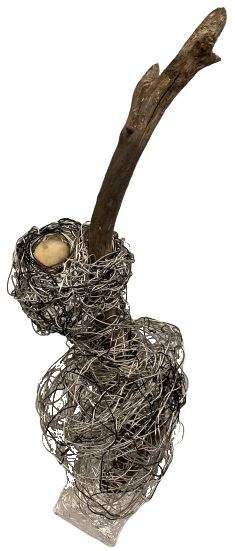

お題：針金と木を使え

金属と木の性質に着目して作りました。
光沢があり、すぐに変形させることができる性質を持つ金属で、人間の外面を表現しました。
反対に、人間の内面(ここでは目と声)を木で表現しています。一見輝いていたり形が整っていたりしているように見える金属は形を変えるのが簡単ですが、実は時間と愛情をかけて育てられてオリジナリティのあるその形になった木の方が、本当は美しいのではないかという対比を表しています。
また、木の方は有機物なので、すぐに燃えて消失してしまうという点でも心と重なる部分があります。
作品の人間の表情が苦しんで見えるのは、彼自身は内面の方が大事だと思いながらも、世間の目は実際には外面の方に向きがちであるという残酷なもどかしさを表現してあります。針金でグルグルと縛られているように、彼自身もそのギャップに縛られて苦しんでいるのかもしれません。